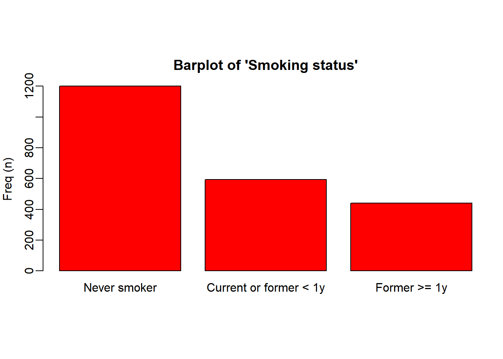
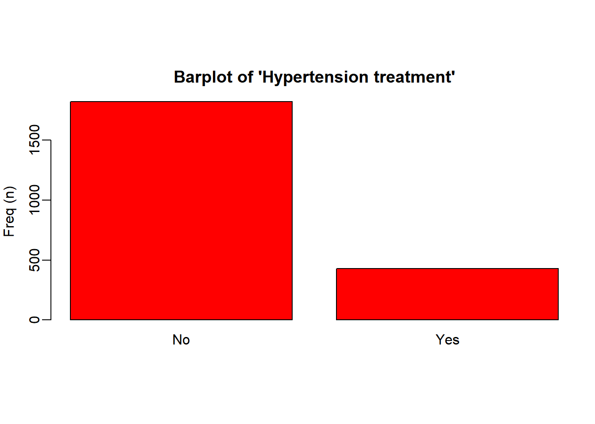
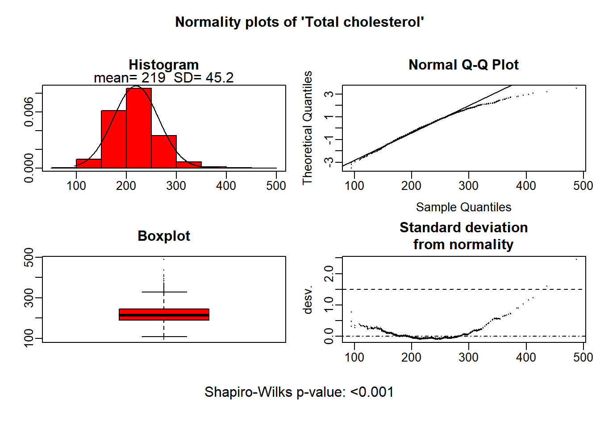

install.packages("compareGroups") compareGroups-描述性表一快速生成
R包
表格
第95期 R语言教程！compareGroups神包制作描述性表一
描述性表1在论文写作中占据着开篇起笔的作用。对所用的数据进行描述和简单分析，为后续的模型构建提供数据可靠性信息
本期介绍如何使用compareGroups神包来快速生成符合学术规范的表1。并进行包括以下自定义设置：1.设置亚组 2.设置非正态变量使用非参组间检验 3.设置显示缺失值 4.设置显示OR值 5.设置使用自定义组间比较方法 6 数据导出
R包介绍
compareGroups 是一个在 CRAN 上可用的 R 包，它可以生成描述性表格，展示几个变量的均值、标准差、分位数或频率。此外，还会使用适当的测试计算 p 值来检验组间差异。
通过简单的代码，就能在 R 中生成美观、规范且可直接用于论文发表的描述性表格。这些表格还可以导出到不同的格式，如 Word、Excel、PDF，或插入到 R-Sweave 或 R-markdown 文档中。
在手册 https://cran.r-project.org/web/packages/compareGroups/vignettes/compareGroups_vignette.html里提供了非常友好的R包教程，描述了 compareGroups 的所有功能，并附有实际示例。
R包安装
从CRAN中安装R包
或者从github安装最新版本
library(devtools)
devtools::install_github("isubirana/compareGroups")R包参数
查看数据
(不重要可以不看，知道是包含多种数据类型的数据集即可)调用R包自带的regicor数据，包含25个变量。regicor（吉罗纳心脏登记）研究是一项横断面研究，参与者来自西班牙东北部地区。在此研究中，收集了参与者的各种数据集，包括人口统计信息（如年龄和性别）、人体测量数据（如身高、体重和腰围）以及脂质水平（包括总胆固醇和甘油三酯）。此外，参与者还完成了涵盖体育活动和生活质量等领域的问卷。
为了追踪健康结果，研究还收集了关于心血管事件和死亡的数据。这些信息是通过医院和官方登记册及报告，在超过10年的时间里获得的。
library(compareGroups)
library(bruceR) #之前有介绍过，方便描述数据# 方便起见，我们只分析前十个变量
data("regicor")
regicor <- regicor[,1:10]
str(regicor)'data.frame': 2294 obs. of 10 variables:
$ id : num 2.26e+03 1.88e+03 3.00e+09 3.00e+09 3.00e+09 ...
..- attr(*, "label")= Named chr "Individual id"
.. ..- attr(*, "names")= chr "id"
$ year : Factor w/ 3 levels "1995","2000",..: 3 3 2 2 2 2 2 1 3 1 ...
..- attr(*, "label")= Named chr "Recruitment year"
.. ..- attr(*, "names")= chr "year"
$ age : int 70 56 37 69 70 40 66 53 43 70 ...
..- attr(*, "label")= Named chr "Age"
.. ..- attr(*, "names")= chr "age"
$ sex : Factor w/ 2 levels "Male","Female": 2 2 1 2 2 2 1 2 2 1 ...
..- attr(*, "label")= chr "Sex"
$ smoker : Factor w/ 3 levels "Never smoker",..: 1 1 2 1 NA 2 1 1 3 3 ...
..- attr(*, "label")= Named chr "Smoking status"
.. ..- attr(*, "names")= chr "smoker"
$ sbp : int 138 139 132 168 NA 108 120 132 95 142 ...
..- attr(*, "label")= Named chr "Systolic blood pressure"
.. ..- attr(*, "names")= chr "sbp"
$ dbp : int 75 89 82 97 NA 70 72 78 65 78 ...
..- attr(*, "label")= Named chr "Diastolic blood pressure"
.. ..- attr(*, "names")= chr "dbp"
$ histhtn: Factor w/ 2 levels "Yes","No": 2 2 2 2 2 2 1 2 2 2 ...
..- attr(*, "label")= Named chr "History of hypertension"
.. ..- attr(*, "names")= chr "histbp"
$ txhtn : Factor w/ 2 levels "No","Yes": 1 1 1 1 1 1 2 1 1 1 ...
..- attr(*, "label")= chr "Hypertension treatment"
$ chol : num 294 220 245 168 NA NA 298 254 194 188 ...
..- attr(*, "label")= Named chr "Total cholesterol"
.. ..- attr(*, "names")= chr "chol"生成描述性统计表
简单生成一个最简单的描述性统计表，发现定量资料用平均值标准差描述，分类资料用例数和占比描述
descrTable( ~ ., data = regicor)
--------Summary descriptives table ---------
_______________________________________________________
[ALL] N
N=2294
¯¯¯¯¯¯¯¯¯¯¯¯¯¯¯¯¯¯¯¯¯¯¯¯¯¯¯¯¯¯¯¯¯¯¯¯¯¯¯¯¯¯¯¯¯¯¯¯¯¯¯¯¯¯¯
Individual id 1215817624 (1339538686) 2294
Recruitment year: 2294
1995 431 (18.8%)
2000 786 (34.3%)
2005 1077 (46.9%)
Age 54.7 (11.0) 2294
Sex: 2294
Male 1101 (48.0%)
Female 1193 (52.0%)
Smoking status: 2233
Never smoker 1201 (53.8%)
Current or former < 1y 593 (26.6%)
Former >= 1y 439 (19.7%)
Systolic blood pressure 131 (20.3) 2280
Diastolic blood pressure 79.7 (10.5) 2280
History of hypertension: 2286
Yes 723 (31.6%)
No 1563 (68.4%)
Hypertension treatment: 2251
No 1823 (81.0%)
Yes 428 (19.0%)
Total cholesterol 219 (45.2) 2193
¯¯¯¯¯¯¯¯¯¯¯¯¯¯¯¯¯¯¯¯¯¯¯¯¯¯¯¯¯¯¯¯¯¯¯¯¯¯¯¯¯¯¯¯¯¯¯¯¯¯¯¯¯¯¯ 设置分组变量
根据吸烟情况将人群分为三组，同时生成组间比较列（p.overall）。自动使用卡方检验(分类变量)和方差分析(计量资料：两类时等价t检验)。
descrTable(`smoker`~ ., data = regicor)
--------Summary descriptives table by 'Smoking status'---------
_________________________________________________________________________________________________________
Never smoker Current or former < 1y Former >= 1y p.overall
N=1201 N=593 N=439
¯¯¯¯¯¯¯¯¯¯¯¯¯¯¯¯¯¯¯¯¯¯¯¯¯¯¯¯¯¯¯¯¯¯¯¯¯¯¯¯¯¯¯¯¯¯¯¯¯¯¯¯¯¯¯¯¯¯¯¯¯¯¯¯¯¯¯¯¯¯¯¯¯¯¯¯¯¯¯¯¯¯¯¯¯¯¯¯¯¯¯¯¯¯¯¯¯¯¯¯¯¯¯¯¯
Individual id 1229013133 (1337342152) 1534618659 (1372769742) 690225475 (1126583145) <0.001
Recruitment year: <0.001
1995 234 (19.5%) 109 (18.4%) 72 (16.4%)
2000 414 (34.5%) 267 (45.0%) 77 (17.5%)
2005 553 (46.0%) 217 (36.6%) 290 (66.1%)
Age 56.5 (10.8) 50.6 (10.7) 55.3 (10.6) <0.001
Sex: <0.001
Male 301 (25.1%) 410 (69.1%) 360 (82.0%)
Female 900 (74.9%) 183 (30.9%) 79 (18.0%)
Systolic blood pressure 132 (20.5) 128 (19.8) 133 (19.7) <0.001
Diastolic blood pressure 79.5 (10.2) 78.8 (11.0) 81.2 (10.8) 0.001
History of hypertension: <0.001
Yes 421 (35.1%) 125 (21.2%) 162 (36.9%)
No 777 (64.9%) 464 (78.8%) 277 (63.1%)
Hypertension treatment: <0.001
No 922 (77.9%) 525 (90.2%) 331 (77.2%)
Yes 262 (22.1%) 57 (9.79%) 98 (22.8%)
Total cholesterol 220 (46.7) 219 (44.7) 214 (42.6) 0.039
¯¯¯¯¯¯¯¯¯¯¯¯¯¯¯¯¯¯¯¯¯¯¯¯¯¯¯¯¯¯¯¯¯¯¯¯¯¯¯¯¯¯¯¯¯¯¯¯¯¯¯¯¯¯¯¯¯¯¯¯¯¯¯¯¯¯¯¯¯¯¯¯¯¯¯¯¯¯¯¯¯¯¯¯¯¯¯¯¯¯¯¯¯¯¯¯¯¯¯¯¯¯¯¯¯ 删除某些变量不显示
如不希望描述性统计对Id和year进行描述，直接在~右侧的.后使用减号进行删除（如需要的变量比较少，也可以手动写公式一个个加）
descrTable(`smoker`~ .-id-year, data = regicor)
--------Summary descriptives table by 'Smoking status'---------
___________________________________________________________________________________
Never smoker Current or former < 1y Former >= 1y p.overall
N=1201 N=593 N=439
¯¯¯¯¯¯¯¯¯¯¯¯¯¯¯¯¯¯¯¯¯¯¯¯¯¯¯¯¯¯¯¯¯¯¯¯¯¯¯¯¯¯¯¯¯¯¯¯¯¯¯¯¯¯¯¯¯¯¯¯¯¯¯¯¯¯¯¯¯¯¯¯¯¯¯¯¯¯¯¯¯¯¯
Age 56.5 (10.8) 50.6 (10.7) 55.3 (10.6) <0.001
Sex: <0.001
Male 301 (25.1%) 410 (69.1%) 360 (82.0%)
Female 900 (74.9%) 183 (30.9%) 79 (18.0%)
Systolic blood pressure 132 (20.5) 128 (19.8) 133 (19.7) <0.001
Diastolic blood pressure 79.5 (10.2) 78.8 (11.0) 81.2 (10.8) 0.001
History of hypertension: <0.001
Yes 421 (35.1%) 125 (21.2%) 162 (36.9%)
No 777 (64.9%) 464 (78.8%) 277 (63.1%)
Hypertension treatment: <0.001
No 922 (77.9%) 525 (90.2%) 331 (77.2%)
Yes 262 (22.1%) 57 (9.79%) 98 (22.8%)
Total cholesterol 220 (46.7) 219 (44.7) 214 (42.6) 0.039
¯¯¯¯¯¯¯¯¯¯¯¯¯¯¯¯¯¯¯¯¯¯¯¯¯¯¯¯¯¯¯¯¯¯¯¯¯¯¯¯¯¯¯¯¯¯¯¯¯¯¯¯¯¯¯¯¯¯¯¯¯¯¯¯¯¯¯¯¯¯¯¯¯¯¯¯¯¯¯¯¯¯¯ 亚组描述
subset=(逻辑判断)来挑选出男性患者进行分析
descrTable(`smoker`~ .-id-year-sex, data = regicor,
subset=(sex=="Male"))
--------Summary descriptives table by 'smoker'---------
___________________________________________________________________________________
Never smoker Current or former < 1y Former >= 1y p.overall
N=301 N=410 N=360
¯¯¯¯¯¯¯¯¯¯¯¯¯¯¯¯¯¯¯¯¯¯¯¯¯¯¯¯¯¯¯¯¯¯¯¯¯¯¯¯¯¯¯¯¯¯¯¯¯¯¯¯¯¯¯¯¯¯¯¯¯¯¯¯¯¯¯¯¯¯¯¯¯¯¯¯¯¯¯¯¯¯¯
Age 55.0 (11.5) 52.7 (11.0) 56.8 (10.5) <0.001
Systolic blood pressure 133 (18.5) 133 (19.0) 136 (19.0) 0.048
Diastolic blood pressure 81.3 (9.31) 81.2 (10.6) 82.3 (10.4) 0.253
History of hypertension: <0.001
Yes 85 (28.4%) 101 (24.8%) 145 (40.3%)
No 214 (71.6%) 306 (75.2%) 215 (59.7%)
Hypertension treatment: <0.001
No 248 (83.5%) 357 (88.4%) 263 (75.1%)
Yes 49 (16.5%) 47 (11.6%) 87 (24.9%)
Total cholesterol 213 (44.0) 221 (41.9) 216 (43.3) 0.061
¯¯¯¯¯¯¯¯¯¯¯¯¯¯¯¯¯¯¯¯¯¯¯¯¯¯¯¯¯¯¯¯¯¯¯¯¯¯¯¯¯¯¯¯¯¯¯¯¯¯¯¯¯¯¯¯¯¯¯¯¯¯¯¯¯¯¯¯¯¯¯¯¯¯¯¯¯¯¯¯¯¯¯ 自定义设置分组检验方法
设置mehtod参数值，如果不设置，默认所有变量符合正态分布。修改age为非正态后使用四分位数进行描述，同时使用非参检验进行分组比较
参数值为1：正态分布分析 ：此值强制分析假设行变量遵循正态分布。
参数值为2：连续非正态分析 ：选择此值意味着分析不假设行变量遵循正态分布，将其视为连续但非正态分布的变量。
参数值为3：分类分析：此值强制分析将行变量视为分类变量，无论其原始类型如何。
参数值为4：Shapiro-Wilks检验 （正态检验）：使用此值触发Shapiro-Wilks检验，以确定变量是否应在正态性假设下进行分析，还是非正态。这对于根据数据做出如何处理每个变量的决策非常有用。
# descrTable(`smoker`~ .-id-year, data = regicor,method = 1) 假定所有变量符合正态分布
#设置age变量为非正态，使用非参检验进行比较
descrTable(`sex`~ .-id-year, data = regicor, method=c(age = 2))
--------Summary descriptives table by 'Sex'---------
______________________________________________________________________
Male Female p.overall
N=1101 N=1193
¯¯¯¯¯¯¯¯¯¯¯¯¯¯¯¯¯¯¯¯¯¯¯¯¯¯¯¯¯¯¯¯¯¯¯¯¯¯¯¯¯¯¯¯¯¯¯¯¯¯¯¯¯¯¯¯¯¯¯¯¯¯¯¯¯¯¯¯¯¯
Age 54.0 [46.0;64.0] 55.0 [46.0;64.0] 0.851
Smoking status: <0.001
Never smoker 301 (28.1%) 900 (77.5%)
Current or former < 1y 410 (38.3%) 183 (15.7%)
Former >= 1y 360 (33.6%) 79 (6.80%)
Systolic blood pressure 134 (18.9) 129 (21.2) <0.001
Diastolic blood pressure 81.7 (10.2) 77.8 (10.5) <0.001
History of hypertension: 0.644
Yes 341 (31.1%) 382 (32.1%)
No 755 (68.9%) 808 (67.9%)
Hypertension treatment: 0.096
No 889 (82.5%) 934 (79.6%)
Yes 189 (17.5%) 239 (20.4%)
Total cholesterol 217 (42.7) 220 (47.4) 0.140
¯¯¯¯¯¯¯¯¯¯¯¯¯¯¯¯¯¯¯¯¯¯¯¯¯¯¯¯¯¯¯¯¯¯¯¯¯¯¯¯¯¯¯¯¯¯¯¯¯¯¯¯¯¯¯¯¯¯¯¯¯¯¯¯¯¯¯¯¯¯ 不显示标签label值
有些数据集自带label，可以通过include.label设置是否显示标签
descrTable(`sex`~ .-id-year, data = regicor, include.label= FALSE)
--------Summary descriptives table by 'sex'---------
____________________________________________________________
Male Female p.overall
N=1101 N=1193
¯¯¯¯¯¯¯¯¯¯¯¯¯¯¯¯¯¯¯¯¯¯¯¯¯¯¯¯¯¯¯¯¯¯¯¯¯¯¯¯¯¯¯¯¯¯¯¯¯¯¯¯¯¯¯¯¯¯¯¯
age 54.8 (11.1) 54.7 (11.0) 0.840
smoker: <0.001
Never smoker 301 (28.1%) 900 (77.5%)
Current or former < 1y 410 (38.3%) 183 (15.7%)
Former >= 1y 360 (33.6%) 79 (6.80%)
sbp 134 (18.9) 129 (21.2) <0.001
dbp 81.7 (10.2) 77.8 (10.5) <0.001
histhtn: 0.644
Yes 341 (31.1%) 382 (32.1%)
No 755 (68.9%) 808 (67.9%)
txhtn: 0.096
No 889 (82.5%) 934 (79.6%)
Yes 189 (17.5%) 239 (20.4%)
chol 217 (42.7) 220 (47.4) 0.140
¯¯¯¯¯¯¯¯¯¯¯¯¯¯¯¯¯¯¯¯¯¯¯¯¯¯¯¯¯¯¯¯¯¯¯¯¯¯¯¯¯¯¯¯¯¯¯¯¯¯¯¯¯¯¯¯¯¯¯¯ 设置计量资料用四分位法描述
设置Q1参数和Q3参数设置如何描述非正态连续变量。如果设置成0和1就是最小值最大值描述
descrTable(`sex`~ .-id-year, data = regicor,method = c(age=2),
Q1=0.025, Q3=0.975)
--------Summary descriptives table by 'Sex'---------
______________________________________________________________________
Male Female p.overall
N=1101 N=1193
¯¯¯¯¯¯¯¯¯¯¯¯¯¯¯¯¯¯¯¯¯¯¯¯¯¯¯¯¯¯¯¯¯¯¯¯¯¯¯¯¯¯¯¯¯¯¯¯¯¯¯¯¯¯¯¯¯¯¯¯¯¯¯¯¯¯¯¯¯¯
Age 54.0 [36.0;73.0] 55.0 [36.0;73.0] 0.851
Smoking status: <0.001
Never smoker 301 (28.1%) 900 (77.5%)
Current or former < 1y 410 (38.3%) 183 (15.7%)
Former >= 1y 360 (33.6%) 79 (6.80%)
Systolic blood pressure 134 (18.9) 129 (21.2) <0.001
Diastolic blood pressure 81.7 (10.2) 77.8 (10.5) <0.001
History of hypertension: 0.644
Yes 341 (31.1%) 382 (32.1%)
No 755 (68.9%) 808 (67.9%)
Hypertension treatment: 0.096
No 889 (82.5%) 934 (79.6%)
Yes 189 (17.5%) 239 (20.4%)
Total cholesterol 217 (42.7) 220 (47.4) 0.140
¯¯¯¯¯¯¯¯¯¯¯¯¯¯¯¯¯¯¯¯¯¯¯¯¯¯¯¯¯¯¯¯¯¯¯¯¯¯¯¯¯¯¯¯¯¯¯¯¯¯¯¯¯¯¯¯¯¯¯¯¯¯¯¯¯¯¯¯¯¯ 生成OR和HR值
使用show.ratio变量来显示OR值，对于变量类型是time-to-event变量则输出HR值
descrTable(`sex`~ .-id-year, data = regicor,show.ratio = TRUE)
--------Summary descriptives table by 'Sex'---------
_____________________________________________________________________________________
Male Female OR p.ratio p.overall
N=1101 N=1193
¯¯¯¯¯¯¯¯¯¯¯¯¯¯¯¯¯¯¯¯¯¯¯¯¯¯¯¯¯¯¯¯¯¯¯¯¯¯¯¯¯¯¯¯¯¯¯¯¯¯¯¯¯¯¯¯¯¯¯¯¯¯¯¯¯¯¯¯¯¯¯¯¯¯¯¯¯¯¯¯¯¯¯¯¯
Age 54.8 (11.1) 54.7 (11.0) 1.00 [0.99;1.01] 0.840 0.840
Smoking status: <0.001
Never smoker 301 (28.1%) 900 (77.5%) Ref. Ref.
Current or former < 1y 410 (38.3%) 183 (15.7%) 0.15 [0.12;0.19] 0.000
Former >= 1y 360 (33.6%) 79 (6.80%) 0.07 [0.06;0.10] 0.000
Systolic blood pressure 134 (18.9) 129 (21.2) 0.99 [0.98;0.99] <0.001 <0.001
Diastolic blood pressure 81.7 (10.2) 77.8 (10.5) 0.96 [0.96;0.97] <0.001 <0.001
History of hypertension: 0.644
Yes 341 (31.1%) 382 (32.1%) Ref. Ref.
No 755 (68.9%) 808 (67.9%) 0.96 [0.80;1.14] 0.612
Hypertension treatment: 0.096
No 889 (82.5%) 934 (79.6%) Ref. Ref.
Yes 189 (17.5%) 239 (20.4%) 1.20 [0.97;1.49] 0.086
Total cholesterol 217 (42.7) 220 (47.4) 1.00 [1.00;1.00] 0.141 0.140
¯¯¯¯¯¯¯¯¯¯¯¯¯¯¯¯¯¯¯¯¯¯¯¯¯¯¯¯¯¯¯¯¯¯¯¯¯¯¯¯¯¯¯¯¯¯¯¯¯¯¯¯¯¯¯¯¯¯¯¯¯¯¯¯¯¯¯¯¯¯¯¯¯¯¯¯¯¯¯¯¯¯¯¯¯ 设置OR值的ref对照
使用ref参数设置变量的ref对照值。代码所示为把smoker的因子level为3（值为”Former>=1y”）的设置为对照组计算其它组的OR值
同样作用的函数还有ref.no 和 ref.y
descrTable(`sex`~ .-id-year, data = regicor,
include.label = FALSE,show.ratio = TRUE,
ref = c(smoker=3))
--------Summary descriptives table by 'sex'---------
_____________________________________________________________________________________
Male Female OR p.ratio p.overall
N=1101 N=1193
¯¯¯¯¯¯¯¯¯¯¯¯¯¯¯¯¯¯¯¯¯¯¯¯¯¯¯¯¯¯¯¯¯¯¯¯¯¯¯¯¯¯¯¯¯¯¯¯¯¯¯¯¯¯¯¯¯¯¯¯¯¯¯¯¯¯¯¯¯¯¯¯¯¯¯¯¯¯¯¯¯¯¯¯¯
age 54.8 (11.1) 54.7 (11.0) 1.00 [0.99;1.01] 0.840 0.840
smoker: <0.001
Never smoker 301 (28.1%) 900 (77.5%) 13.6 [10.4;18.0] 0.000
Current or former < 1y 410 (38.3%) 183 (15.7%) 2.03 [1.51;2.75] <0.001
Former >= 1y 360 (33.6%) 79 (6.80%) Ref. Ref.
sbp 134 (18.9) 129 (21.2) 0.99 [0.98;0.99] <0.001 <0.001
dbp 81.7 (10.2) 77.8 (10.5) 0.96 [0.96;0.97] <0.001 <0.001
histhtn: 0.644
Yes 341 (31.1%) 382 (32.1%) Ref. Ref.
No 755 (68.9%) 808 (67.9%) 0.96 [0.80;1.14] 0.612
txhtn: 0.096
No 889 (82.5%) 934 (79.6%) Ref. Ref.
Yes 189 (17.5%) 239 (20.4%) 1.20 [0.97;1.49] 0.086
chol 217 (42.7) 220 (47.4) 1.00 [1.00;1.00] 0.141 0.140
¯¯¯¯¯¯¯¯¯¯¯¯¯¯¯¯¯¯¯¯¯¯¯¯¯¯¯¯¯¯¯¯¯¯¯¯¯¯¯¯¯¯¯¯¯¯¯¯¯¯¯¯¯¯¯¯¯¯¯¯¯¯¯¯¯¯¯¯¯¯¯¯¯¯¯¯¯¯¯¯¯¯¯¯¯ 不显示对照组的描述信息
使用hide.no来隐藏某些因子水平的描述。常用来隐藏掉2分类变量的否的信息
descrTable(`sex`~ .-id-year, data = regicor,hide.no = "No")
--------Summary descriptives table by 'Sex'---------
____________________________________________________________
Male Female p.overall
N=1101 N=1193
¯¯¯¯¯¯¯¯¯¯¯¯¯¯¯¯¯¯¯¯¯¯¯¯¯¯¯¯¯¯¯¯¯¯¯¯¯¯¯¯¯¯¯¯¯¯¯¯¯¯¯¯¯¯¯¯¯¯¯¯
Age 54.8 (11.1) 54.7 (11.0) 0.840
Smoking status: <0.001
Never smoker 301 (28.1%) 900 (77.5%)
Current or former < 1y 410 (38.3%) 183 (15.7%)
Former >= 1y 360 (33.6%) 79 (6.80%)
Systolic blood pressure 134 (18.9) 129 (21.2) <0.001
Diastolic blood pressure 81.7 (10.2) 77.8 (10.5) <0.001
History of hypertension 341 (31.1%) 382 (32.1%) 0.644
Hypertension treatment 189 (17.5%) 239 (20.4%) 0.096
Total cholesterol 217 (42.7) 220 (47.4) 0.140
¯¯¯¯¯¯¯¯¯¯¯¯¯¯¯¯¯¯¯¯¯¯¯¯¯¯¯¯¯¯¯¯¯¯¯¯¯¯¯¯¯¯¯¯¯¯¯¯¯¯¯¯¯¯¯¯¯¯¯¯ 同时显示总人群的描述
descrTable(`sex`~ .-id-year, data = regicor,show.all = TRUE)
--------Summary descriptives table by 'Sex'---------
_________________________________________________________________________
[ALL] Male Female p.overall
N=2294 N=1101 N=1193
¯¯¯¯¯¯¯¯¯¯¯¯¯¯¯¯¯¯¯¯¯¯¯¯¯¯¯¯¯¯¯¯¯¯¯¯¯¯¯¯¯¯¯¯¯¯¯¯¯¯¯¯¯¯¯¯¯¯¯¯¯¯¯¯¯¯¯¯¯¯¯¯¯
Age 54.7 (11.0) 54.8 (11.1) 54.7 (11.0) 0.840
Smoking status: <0.001
Never smoker 1201 (53.8%) 301 (28.1%) 900 (77.5%)
Current or former < 1y 593 (26.6%) 410 (38.3%) 183 (15.7%)
Former >= 1y 439 (19.7%) 360 (33.6%) 79 (6.80%)
Systolic blood pressure 131 (20.3) 134 (18.9) 129 (21.2) <0.001
Diastolic blood pressure 79.7 (10.5) 81.7 (10.2) 77.8 (10.5) <0.001
History of hypertension: 0.644
Yes 723 (31.6%) 341 (31.1%) 382 (32.1%)
No 1563 (68.4%) 755 (68.9%) 808 (67.9%)
Hypertension treatment: 0.096
No 1823 (81.0%) 889 (82.5%) 934 (79.6%)
Yes 428 (19.0%) 189 (17.5%) 239 (20.4%)
Total cholesterol 219 (45.2) 217 (42.7) 220 (47.4) 0.140
¯¯¯¯¯¯¯¯¯¯¯¯¯¯¯¯¯¯¯¯¯¯¯¯¯¯¯¯¯¯¯¯¯¯¯¯¯¯¯¯¯¯¯¯¯¯¯¯¯¯¯¯¯¯¯¯¯¯¯¯¯¯¯¯¯¯¯¯¯¯¯¯¯ 结果导出
可导出各种格式,export2xls, export2latex, export2pdf, export2csv, export2md, export2word
export2word(tab_0,file="1 data_summary.docx")快速可视化
使用plot函数进行可视化，设置file和type参数进行保存例如
plot(res[c(1,2)], file=“./figures/univar/”, type=“png”)
tab0 <- descrTable(`sex`~ .-id-year, data = regicor)
plot(tab0)




